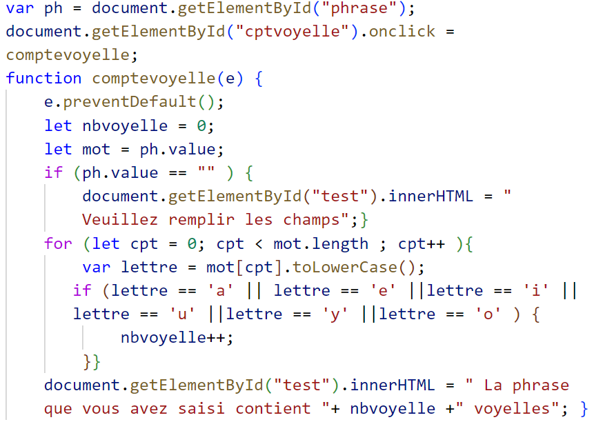
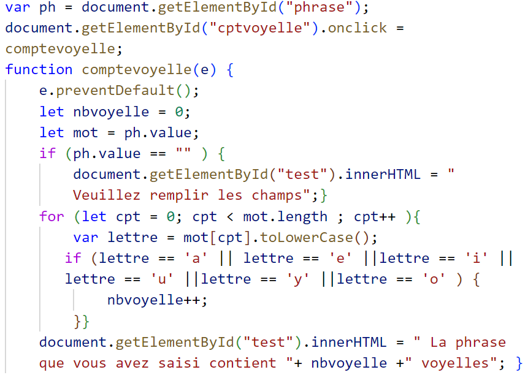

Compter le nombre de voyelles dans une chaine
Enoncé
Ecrire un programme Javascript qui permet de calculer le nombre de voyelles (a,e,i,o,u,y) dans une phrase saisie par l’utilisateur
demo
Code Source

Ecrire un programme Javascript qui permet de calculer le nombre de voyelles (a,e,i,o,u,y) dans une phrase saisie par l’utilisateur
